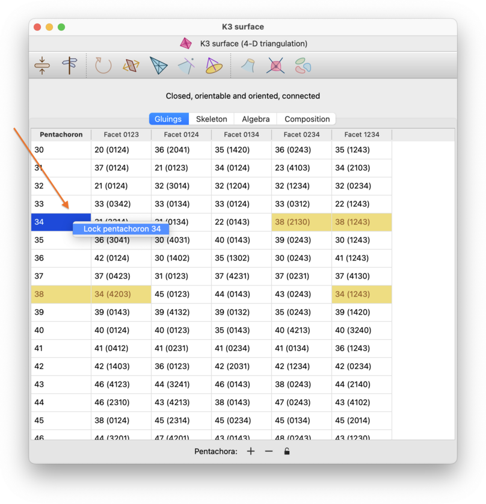
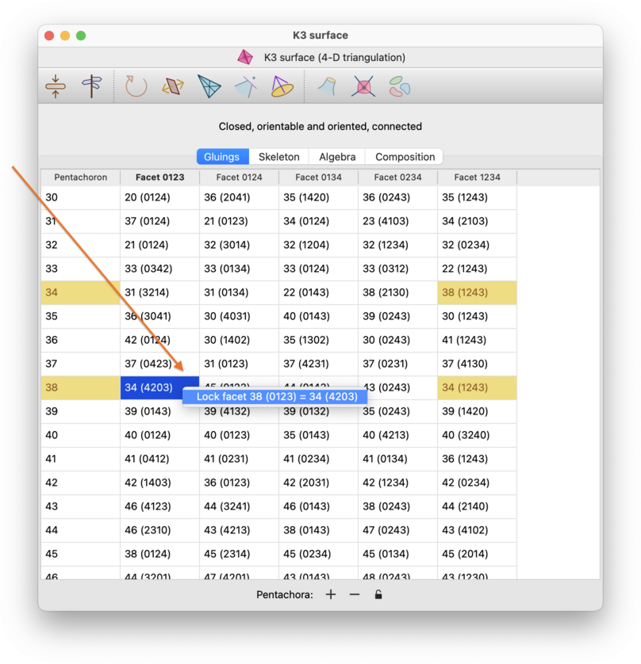
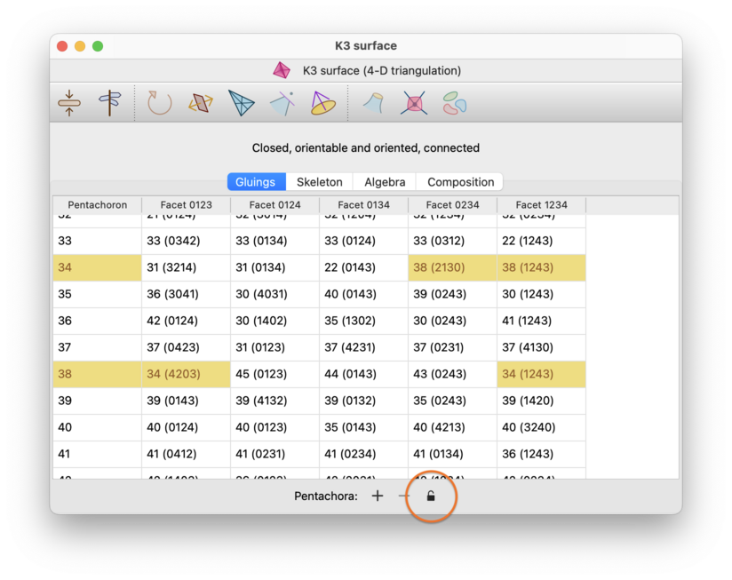
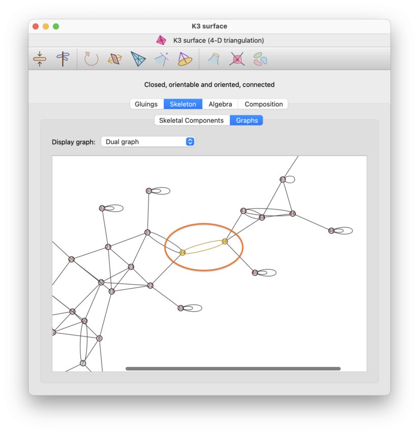

Simplex and Facet Locks | |
| Prev | Triangulations | Next |
As of Regina 7.4, you now have the ability to lock parts of the combinatorial structure of a triangulation. For example, you might have a 3-manifold built from two different geometric pieces separated by a two-triangle torus, and you might want to lock that torus so that any operations on your triangulation work with the two pieces independently, without losing the clear combinatorial separation between them.
In general, a lock will prevent Regina from modifying some part(s) of your triangulation when making modifications. In particular, these locks are enforced when editing gluings, making elementary moves, simplifying the triangulation, or improving its treewidth.
Regina supports two kinds of locks: simplex locks and facet locks.
A simplex lock applies to a top-dimensional simplex in your triangulation (e.g., a tetrahedron in a 3-manifold triangulation, or a pentachoron in a 4-manifold triangulation).
A locked simplex cannot be removed completely (e.g., by manually removing it from the gluings table, or via moves such as edge collapses or 2-0 moves). It cannot be subdivided (e.g., by a 1-4 Pachner move in a 3-manifold triangulation, or via barycentric subdivision). It also cannot be merged into other top-dimensional simplices (e.g., by a 2-3 or 3-2 Pachner move in a 3-manifold triangulation).
A facet lock applies to a (
d-1)-simplex in ad-dimensional triangulation (e.g., a triangle in a 3-manifold triangulation, or a tetrahedron in a 4-manifold triangulation). The example above of locking a two-triangle torus in a 3-manifold triangulation would require two facet locks (one for each triangle).The rules for locked facets are a little more complex:
A locked facet cannot be changed between boundary versus internal due to gluing or ungluing. That is, you cannot glue a locked boundary facet to some other top-dimensional simplex (making it internal), and you cannot unglue the top-dimensional simplices that meet on either side of a locked internal facet (converting it into two new boundary facets). However, see the notes below on flattening—an operation that is allowed, and which might convert a locked internal facet into a boundary facet.
A locked facet cannot be removed completely (e.g., because it is internal to the region where a Pachner move takes place, or internal to the region that is removed completely by a 2-0 move or edge collapse, or because it is a boundary facet whose top-dimensional simplex is being removed by a boundary shelling operation).
Finally, a locked facet cannot be subdivided (e.g., via barycentric subdivision).
However, there are some important cases where operations are explicitly allowed around locked facets:
We do allow moves on the triangulation that topologically “flatten” a region beside a locked facet
F, as long asFsurvives topologically. For example, we allow 2-0 moves or edge collapses that merge a locked facetFwith a parallel facetG, even if this changesFfrom internal to boundary (becauseFwas was originally internal butGwas originally boundary). Likewise, we allow boundary shellings that expose an internal locked facet to the boundary (because this is considered a “topological flattening”, not just an arbitrary ungluing). In all such cases, the lock will “move” withFto its new (possibly merged, possibly boundary) location.We also allow moves that “pry open” a locked facet
Fto become a pair of parallel facetsF1andF2between which we insert new material. This operation is used (for example) when building connected sums, or when drilling edges. In such a scenario, the lock will simply move across to one ofF1orF2. In particular, ifFwas originally a boundary facet then the lock will move to whichever ofF1orF2is still boundary after the operation is complete.
As noted above, locks are enforced in all operations that use local moves (e.g., automated simplification or treewidth improvement). However, some operations are less easy to decompose into simple combinatorial “pieces”, and so these might handle locks differently. For example: truncation of vertices will not be allowed if a triangulation has any locks at all; puncturing a triangulation uses a safe algorithm that will never violate a lock; and making a triangulation 0-efficient cannot work with locks at all so it ignores them entirely. As a general rule, if you want to know if/how some operation handles locks, find the operation here in this handbook and it should be explained for you.
You can edit locks directly through the gluings table. Open the triangulation viewer, and switch to the Gluings tab.
To lock or unlock a top-dimensional simplex, right-click on the simplex in the first column of the table. When a simplex is locked, the corresponding cell in the first column will be coloured yellow.

To lock or unlock a facet, right-click on the corresponding cell in the remaining columns of the table (specifically, the cell that contains the gluing information for that facet). For a boundary facet, this will be an empty cell. For an internal facet, you can use either of the two cells that describe the gluing across that facet. As before, when a facet is locked, the corresponding cell (for a boundary facet) or pair of cells (for an internal facet) will be coloured yellow.

If your computer does not support right-click (e.g., you have a one-button mouse), then you should use the normal secondary-click mechanism for bringing up a pop-up context menu.
Finally: if your triangulation has any simplex or facet locks, you will see an extra padlock button beneath the gluings table. Pressing this button is a fast way to remove all simplex and facet locks from the triangulation at once.

You can see your locks visually in the dual graph of your triangulation, by visiting the Skeleton→Graphs tab in the triangulation viewer.
Locked simplices will appear as yellow nodes in the dual graph, and locked internal facets will appear as yellow arcs. You will not see locked boundary facets, since these do not appear in the dual graph at all.

Locks will be saved alongside triangulations in Regina data files from Regina 7.4 onwards.
You can still open these files in Regina 7.3.1 or earlier, though these older versions of Regina do not understand locks (which means that if you save your file in an older version of Regina, your locks will be lost completely).
Locks are also encoded in a triangulation's isomorphism signature. Specifically:
If a triangulation does not have any simplex or facet locks, its isomorphism signature will be the same as in Regina 7.3.1 or earlier. For example,
cPcbbbihtis the isomorphism signature of the two-tetrahedron figure eight knot complement with no locks.If a triangulation does have locks, then its isomorphism signature will be the unlocked signature followed by a period and some additional symbols encoding the locks. For example,
cPcbbbiht.aqencodes the two-tetrahedron figure eight knot complement with one locked tetrahedron.To remove locks from an isomorphism signature without opening Regina, you can just delete all symbols from the period onwards.
Recall that in Regina 7.3.1 and earlier, two triangulations have the same isomorphism signature if and only if they are combinatorially isomorphic. Now that Regina 7.4 and later supports locks, this property is upgraded: two triangulations have the same isomorphism signature if and only if there is a combinatorial isomorphism between them that preserves all simplex and facet locks.
| Prev | Contents | Next |
| Modification | Up | SnapPea Triangulations |